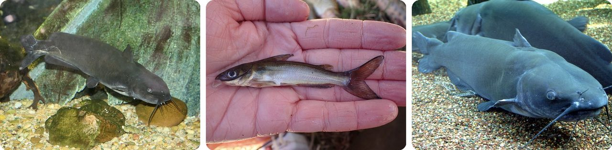
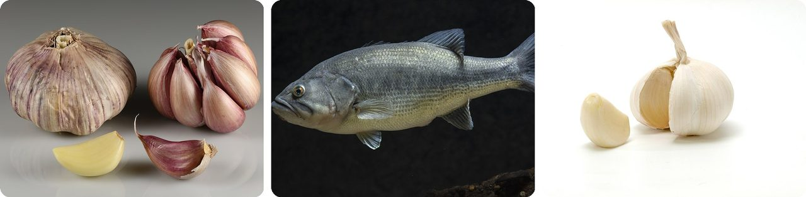
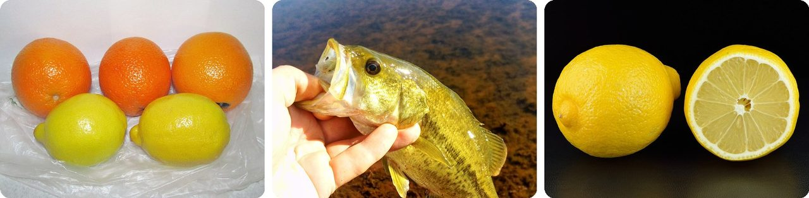
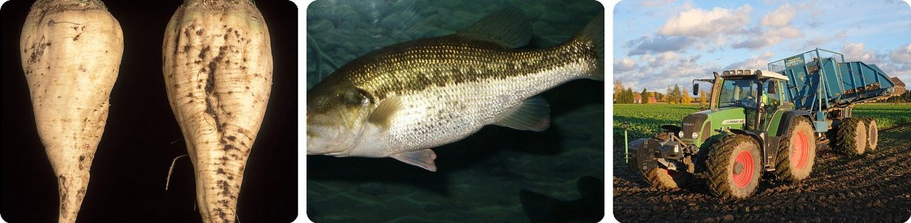
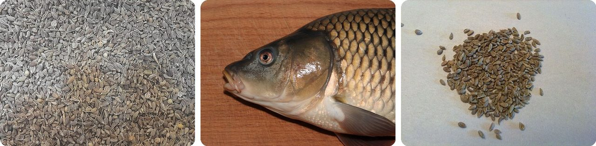
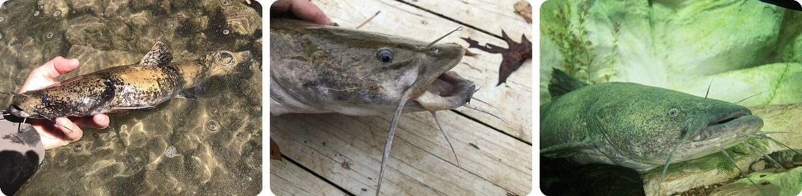
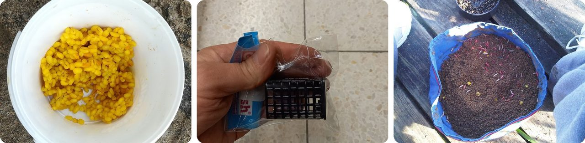
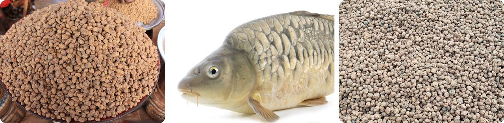
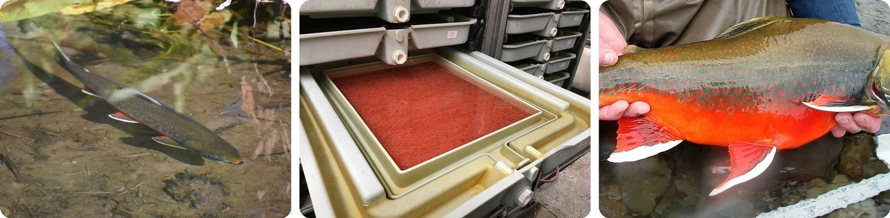
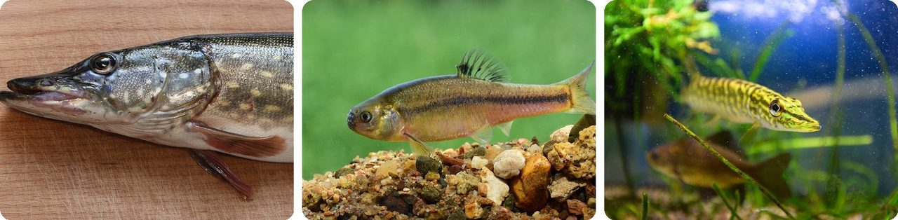

🌍 Top 10 Surprising Smells That Freshwater Fish Love
Nov 9, 2026
1. 🐱 Catfish can taste food with their whole body

Catfish are named for their barbels, the whiskers around their mouths, and some kinds have up to four pairs. But the real superpower is everywhere else: a channel catfish has taste buds all over its body, barbels included.Those taste buds are super sensitive to amino acids, the building blocks of protein found in meat and worms. Scientists found the outside taste buds help a catfish track down food, and the ones in its mouth decide whether to swallow it.
And if a barbel gets cut off, it can grow back.
Basically, a catfish is a swimming tongue.
2. 🧄 Bass bite more when bait smells like garlic

In a 2022 study, scientists hung little bait balls 5 cm under the water in tanks of largemouth bass and filmed them with a phone. For 10 minutes, they counted every bite.Balls flavored with allicin, the stuff that gives garlic its smell, got more bites in both the morning and the evening tests. Other studies found it makes carp and tilapia eat more, too.
Here's the twist: more garlic wasn't better. Bites went up as the flavor got stronger, then dropped again. The sweet spot was 0.2%, about 2 grams in a whole kilogram of food.
Think of it as seasoning: a pinch makes dinner tasty, a fistful ruins it.
3. 🍋 Bass only went for the lemon smell in the evening

The same bass study tested limonene, the fresh smell in orange, grapefruit and lemon peels.At 8 in the morning, the citrus bait balls didn't do any better than plain ones. But at 5 in the afternoon, they got a lot more bites.
Garlic and the next smell on this list worked at both times, so citrus was the picky one.
It's like a snack you only want after school, never at breakfast.
4. 🌱 A sweet smell from beets gets fish hungry

Betaine is a natural substance first found in beets. Food makers use it to make things taste sweeter and more savory.In fish, it reaches the part of the brain that handles smell and gets them eating more. In the bass study, betaine balls got more bites in the morning and the evening.
Then the scientists fed bass for 9 weeks. Garlic, citrus and beet flavors all helped the fish grow on food with less fishmeal in it, but only during the first 4 weeks.
In other words, it's a smell that rings the dinner bell.
5. 🌿 Anglers have bet on licorice-smelling anise for centuries

Anise seeds smell like black licorice, thanks to a compound called anethole. People have added aniseed to fishing bait for hundreds of years, and today it's a classic flavor in carp baits.Why would a fish care? One idea is that anethole smells a bit like some of the small fish that predators eat.
But here's the honest part: nobody has proven it works better than any other strong smell. Carp test almost anything by taking it into their mouths, and a strong scent may just get them checking it out faster.
It's a fishing good-luck charm that happens to smell like candy.
6. 💀 Stink bait spreads the smell of dead fish

Stink bait is exactly what it sounds like: oily fish parts and blood that spread the smell of dead fish through the water. For a catfish that tastes with its whole body, that smell is like a giant arrow pointing to food.In the inland waters of the Southern United States, catfish anglers also toss in sour grain, grain that's gone sour, to pull catfish to their spot.
Native Americans had an even sneakier trick. They hung a dead animal from a tree over a stream, flies laid eggs on it, and weeks later the maggots dropped into the water and fish crowded underneath.
Think of it as a smell only a catfish could love.
7. 🌫️ Anglers throw a smell "appetizer" before they fish

Groundbait is food thrown into the water before fishing, as an "appetizer" to pull fish in by smell. It comes in different crumb sizes, seeds, colors and smells.Some groundbait balls break apart right away into a cloud of crumbs for fish swimming in the middle of the water. Others sink and slowly leak smell along the bottom for fish that feed down there.
Some anglers pack groundbait into a little wire cage, called a feeder, right next to the hook. The smell spreads out and leads fish straight to the bait.
It's like the smell of popcorn pulling you across the movie theater.
8. 🇬🇧 British carp anglers soak tiger nuts for days

Tiger nuts aren't nuts at all. They're small tubers (roots that store food) from a sedge plant, with stripes like a tiger. In the UK, anglers boil them as bait for carp.Some anglers then let the boiled tiger nuts ferment for 24 to 48 hours, one to two days, because it can make them work better. They have to be cooked the right way, though, because badly prepared tiger nuts can harm carp.
A famous carp named Benson, who weighed 54 lb (24 kg), about as much as a 7-year-old kid, was once found dead next to an empty bag of raw tiger nuts. Everyone blamed the nuts, but an expert who examined her said she had died naturally.
It's a bait that has to be cooked just right, like dried beans.
9. 🇺🇸 Alaska's Dolly Varden feast when streams smell like salmon eggs

When sockeye salmon swim up Alaskan streams to lay eggs, the water changes. In one Alaskan lake's streams, scientists found that amino acids in the water jumped way up after the salmon arrived, matching smells from things like their eggs.Dolly Varden, fish closely related to trout, switch to eating almost nothing but salmon eggs. A 2-foot (60 cm) Dolly Varden can eat 150 to 230 grams of eggs a day, about the weight of one big apple.
Their guts actually grow bigger during egg season, then shrink afterward. They live off what they stored for about a year.
Basically, it's an all-you-can-eat buffet that comes once a year.
10. 🚨 A minnow's danger smell is a dinner bell for pike

In 1938, scientist Karl von Frisch reported that when a minnow's skin gets hurt, it releases a chemical called Schreckstoff, German for "fright substance." Other minnows smell it and get ready to escape.But predators can smell it too. In experiments, northern pike and hunting diving beetles were drawn to minnow skin extract.
In one study in the wild, predatory fish were seven times more likely to strike a lure carrying a sponge soaked in fathead minnow skin extract than one soaked in plain water.
In other words, a "run away!" signal for minnows is a "lunch is here!" signal for pike.
Fun fact
Salmon use smell to find their way back to the stream where they hatched. In one study, chum salmon were given a choice of artificial waters, and they picked the one with the same mix of amino acids as their home river, even over a version four times stronger. Scientists think amino acids are only part of a stream's smell "fingerprint." Salmon are one of many animals that find their way home by smell.
Photo credits (Wikimedia Commons)
- #1: Channel Catfish (Ictalurus punctatus) (3148919051).jpg by Cliff from Arlington, Virginia, USA, CC BY 2.0
- #1: Ictalurus punctatus 453179941.jpg by Fishes of Texas team, CC BY-SA 4.0
- #1: Channel Catfish.jpg by Ryan Somma, CC BY-SA 2.0
- #2: Garlic bulbs and cloves.jpg by Ivar Leidus, CC BY-SA 4.0
- #2: Largemouth Bass (Micropterus salmoides) June 2023 (cropped).jpg by USFWS Mountain Prairie, Public domain
- #2: Opened garlic bulb with garlic clove.jpg by Dubravko Sorić SoraZG on Flickr, CC BY 2.0
- #3: Oranges and Lemons (16785528027).jpg by Willis Lam, CC BY-SA 2.0
- #3: Micropterus salmoides colber lake 11 08 2018.jpg by Nervurax Fishing, CC0
- #3: Lemon - whole and split.jpg by Ivar Leidus, CC BY-SA 4.0
- #4: SugarBeet.jpg by USDA, Public domain
- #4: 1351 largemouth bass (Micropterus salmoides) 300 dpi.jpg by Robert Pos, CC BY 2.0
- #4: Sugar beet harvest.jpg by kallerna, CC BY-SA 4.0
- #5: Aniseeds.jpg by Challiyan, CC BY-SA 4.0
- #5: Cyprinus carpio 2021 G2.jpg by George Chernilevsky, CC BY-SA 4.0
- #5: Anise Seed.jpg by OttawaAC, CC BY-SA 3.0
- #6: Pylodictis olivaris Texas.jpg by nloveland, CC0
- #6: Pylodictis olivaris 104163226.jpg by Raven Dandridge, CC BY 4.0
- #6: Pylodictis olivaris.jpg by Engbretson, Eric / U.S. Fish and Wildlife Service, Public domain
- #7: Zanęta na ryby (Murowana Goslina), groundbait.jpg by MOs810, CC BY-SA 4.0
- #7: Koszyczek zanetowy A 21.jpg by Ciacho5, CC BY-SA 4.0
- #7: Groundbait + maggots + corn (flickr) by zimpenfish, CC BY 2.0
- #8: Cyperus esculentus MS 4388.jpg by Marco Schmidt [1], CC BY-SA 3.0
- #8: Common Carp (Cyprinus carpio) Mirror Variety.jpg by USFWS Mountain Prairie, Public domain
- #8: Dried tiger nut.jpg by Achiri Bitamsimli, CC BY-SA 4.0
- #9: Salvelinus malma 98357138.jpg by Валерия Ковалева, CC BY 4.0
- #9: Spawning Chinook salmon at Entiat (51855458397).jpg by USFWS Pacific, Public domain
- #9: Dolly Varden in hand.jpg by US Fish & Wildlife Service / Togiak Natl Wildlife Refuge, Public domain
- #10: Esox lucius 2021 G1.jpg by George Chernilevsky, CC BY-SA 4.0
- #10: Fathead Minnow-Pimephales promelas, Bear Creek, IA.jpg by Dhester88, CC BY-SA 4.0
- #10: Esox Lucius - Northern Pike (23441354093).jpg by Raita Futo from Tokyo, Japan, CC BY 2.0
_(3148919051).jpg){kind=link}


_June_2023_(cropped).jpg){kind=link}

.jpg){kind=link}


_300_dpi.jpg){kind=link}


,_groundbait.jpg){kind=link}


_Mirror_Variety.jpg){kind=link}


.jpg){kind=link}


.jpg){kind=link}